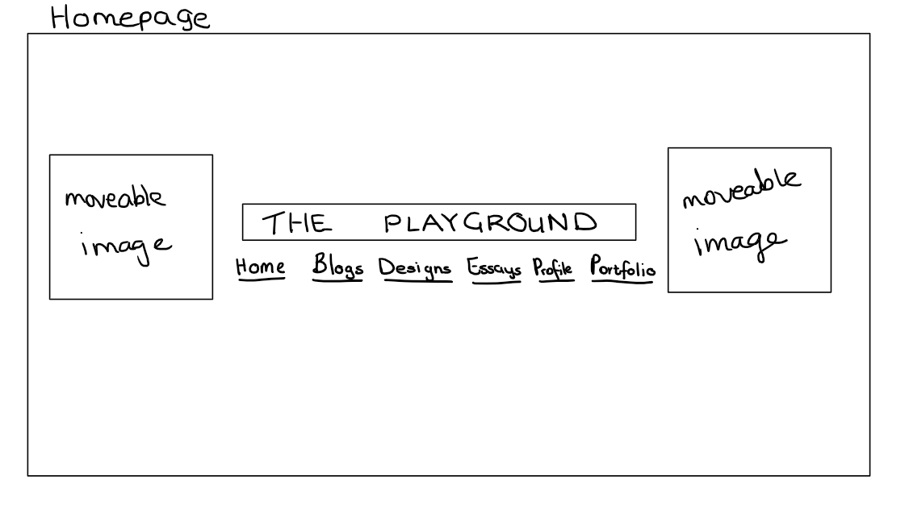
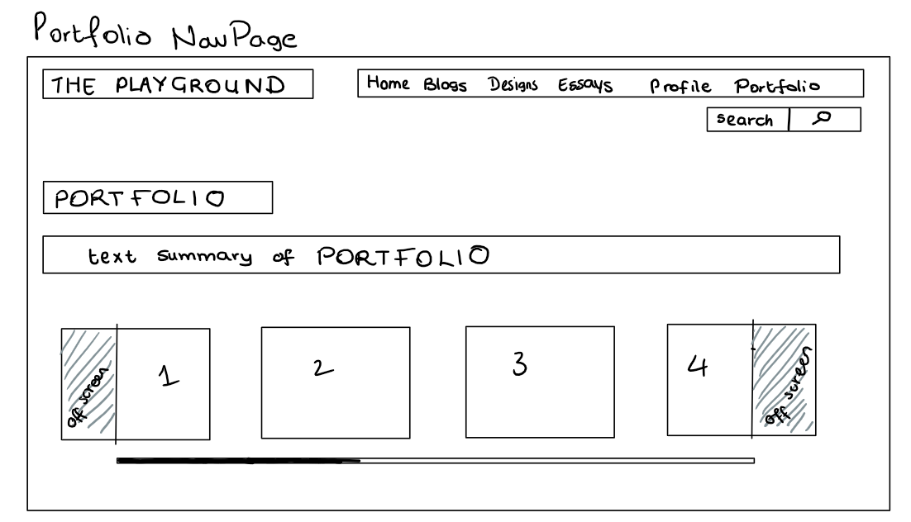
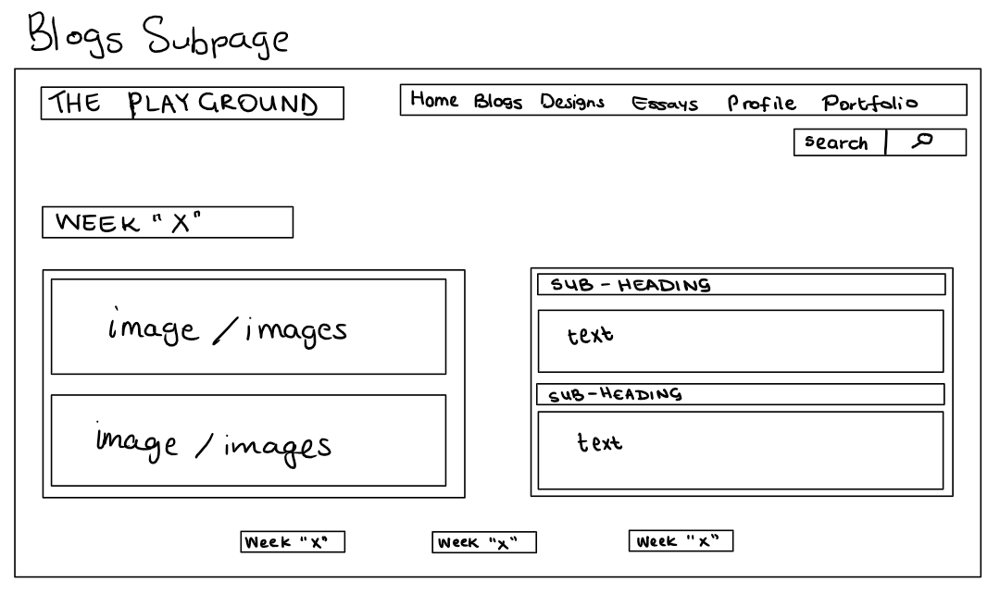
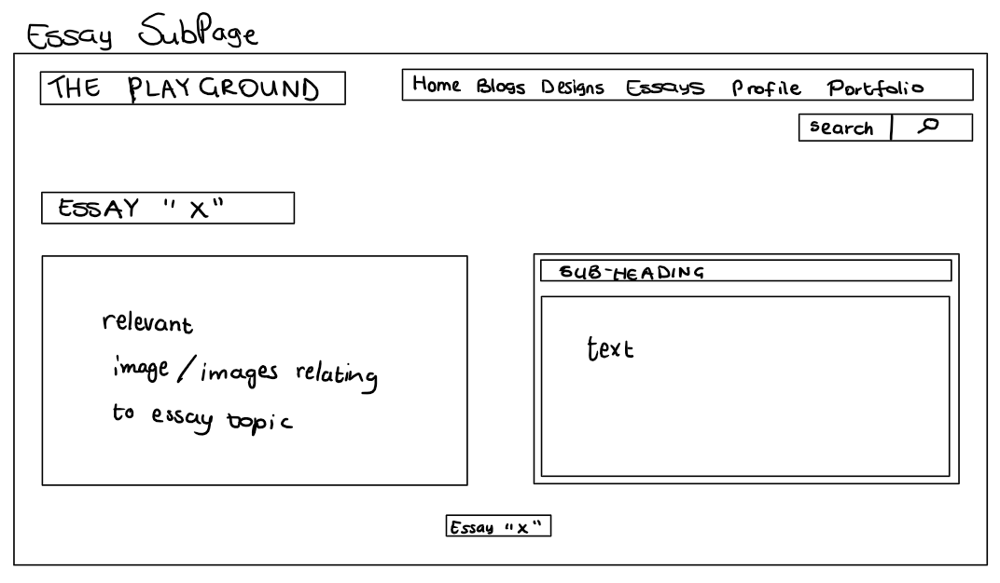

|  |
HOMEPAGE:
The homepage is simple and only contains 3 main components:
The website title in the middle of the page in big bold letters– “The Playground”. Placing the title and the hyperlinks in the middle grabs the user’s attention as it immediately catches the eye.
Two moveable images, as a means to get the users to interact with the website. This was an idea inspired by the websites I researched, and I was particularly fond of how the websites encourages user interaction by allowing the user to have a sense of control over the website (they can customize the webpage).
The list of hyperlinks to allow the user to explore other parts of the website.
|
 |
Blog Navigation Page:
The main page of the blogs that allows users to select which blog they would like to read first. The website title is moved to the top left corner and the main hyperlinks and search bar to the top right corner such that it is still in sight and the user has ease of access but does not interfere with the user’s exploration of the particular page they are on.
The title and summary are left aligned – it is natural for most users to read from left to right.
However, to keep in theme with the website’s title – “The playground” – the user can navigate to the specific blog of their choice by means of an infinite horizontal scroll bar. This again encourages user interaction instead of having static hyperlinks to the specific blogs. I also chose to represent the blog hyperlinks using pictures instead of text,
to make it more visually appealing and stimulating for the user – a picture can speak a thousand words.
|
 |
Designs Navigation Page:
The Designs Navigation page has the same layout as the Blogs Navigation page.
The user has another opportunity explore with the infinite horizontal scroll bar.
|
 |
Essays Navigation Page:
The same layout as the other two navigation pages to keep consistency and uniformity in the website.
|
|  |
Portfolio Navigation Page:
Same layout as the other navigation pages
|
 |
Profile Page:
The profile page is slightly different to other parts the website. I chose to reintroduce the moveable images and in addition moveable text areas/boxes.
I decided to reintroduce this means of user interactivity because the profile page is more personal and less formal and thus to give the user a sense of
my personality, the moveable sections make for a better user experience.
|
|  |
Blogs Sub-Page:
This page is the general layout for each blog. The title on the top left and this time I decided to split the page vertically to layout the text and images.
The images are what catches the user’s eye first thus, it is placed on the far left and as the user scans the page, they will be met with the text that provides
further explanation concerning the images. All text is left aligned. At the bottom of the page, there will be three buttons that can help the user navigate to the other blogs
directly if they so wish to do so, instead of having to go back to the Blogs Nav page – less clicks and less time wasted finding what they need.
|
 |
Designs Sub-Page (IxD):
This is the general layout for both subpages that showcase my designs. Similar to the Blogs subpage, the image is on the left and the text on the right to keep consistent.
Each subpage has a button navigating to the latter subpage.
|
 |
Designs Sub-Page (wireframe):
This is the general layout for both subpages that showcase my designs. Similar to the Blogs subpage, the image is on the left and the text on the right to keep consistent.
Each subpage has a button navigating to the latter subpage.
|
|  |
Essays Sub-Page (wireframe):
Similar to the designs subpage.
|